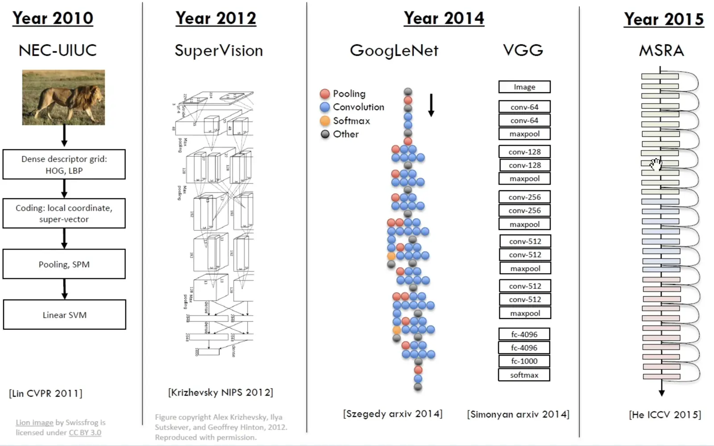
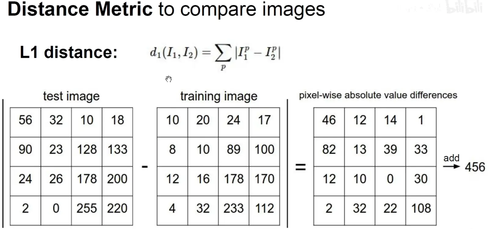
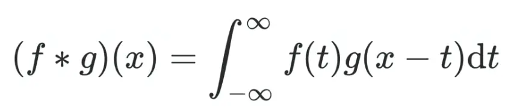
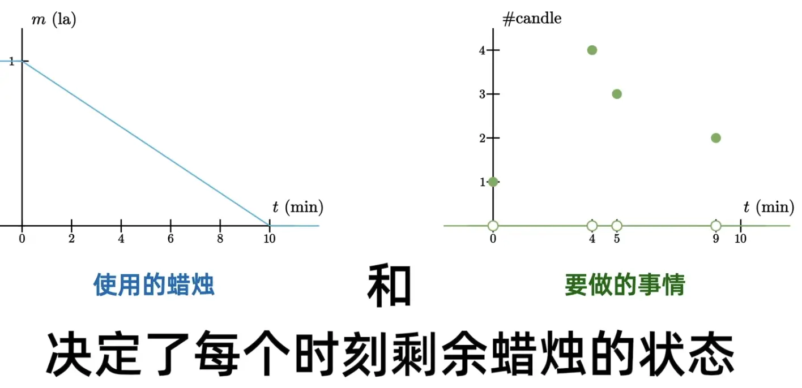
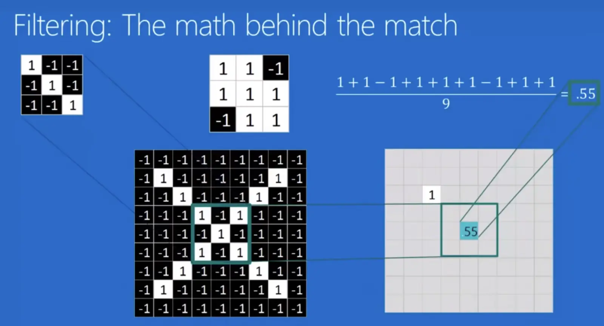
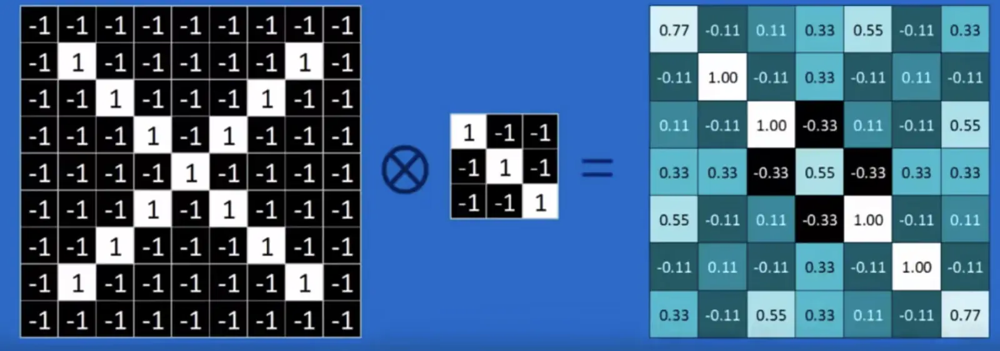
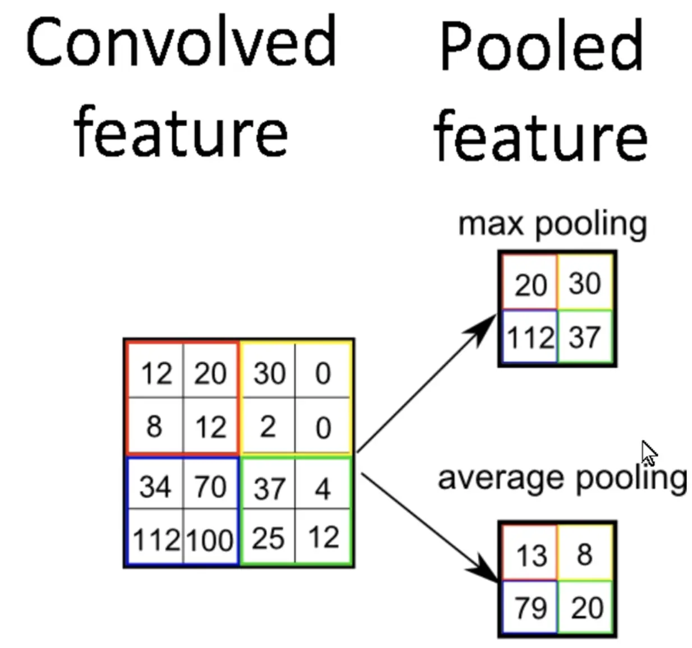

计算机视觉基础笔记
整理图像处理、分类、检测、分割等计算机视觉基础概念。
视觉是分层的。 边缘检测。 人脸分类器。opencv，haar SIFT 图片变成向量，再对向量进行分类，或者回归。 数据集：PASCAL Visual Object Challenge 深度残差网络（高于人类） 主要介绍图像分类，物体检测和图像标注。 经典CNN架构

仍需解决的问题： 人体姿态估计，三维重建，（）语义分割 （不仅要识别出图像中的物品，还要给出物品之间的关联） 图像描述，不仅能读懂图片，还能够理解图片背后的内容。图像分类流程
对于图片，计算机识别的是像素矩阵。 RGB三通道指的是图像由红（R）、绿（G）、蓝（B）三个独立颜色通道组成，每个通道记录对应光强度信息，三者叠加形成完整的彩色图像。[0,255].8个bit存储像素值。每一个通道都是一个二维的矩阵（高度 × 宽度）。 图像分类问题就是一个黑箱。
def classify_image(image):
# Some magic here?
return class_label算法不是显性的，只能用数据驱动的方法。 机器学习：数据驱动方法
收集数据集和其标签
用机器学习在训练集上训练一个分类器
在新的图片（测试集）上进行分类 过拟合：在训练集上完全符合，但在测试集上效果不好
def train (images, labels):
# Machine learning!
return model
def predict(model, test_images) :
# Use model to predict labels
return test_labelsNearest Neighbor
惰性算法 像素相减求和计算距离。

代码实现：```python title:“KNN” import numpy as np from tensorflow.keras.datasets import cifar10 from collections import Counter
——————————
1️⃣ 训练函数
——————————
def train(images, labels): """ KNN算法的“训练”阶段其实不学习参数， 只是把训练数据存下来。 """ model = { “images”: images.reshape(images.shape[0], -1), # 展平每张图片 “labels”: labels.flatten() } return model
——————————
2️⃣ 预测函数
——————————
def predict(model, test_images, k=3): """ 对测试图片进行KNN分类预测。 """ X_train = model[“images”] y_train = model[“labels”] X_test = test_images.reshape(test_images.shape[0], -1)
preds = []
for i, x in enumerate(X_test):
# 计算每张测试图像与所有训练图像的欧氏距离
distances = np.linalg.norm(X_train - x, axis=1)
# 取最近的k个邻居
k_indices = np.argsort(distances)[:k]
k_labels = y_train[k_indices]
# 投票决定类别
most_common = Counter(k_labels).most_common(1)[0][0]
preds.append(most_common)
# 可选：打印进度
if (i + 1) % 5 ** 0:
print(f"已预测 {i + 1}/{len(X_test)} 张图片")
return np.array(preds)——————————
3️⃣ 主程序
——————————
if name ** “main”: # 加载 CIFAR-10 数据集（每张图片32x32x3） (X_train, y_train), (X_test, y_test) = cifar10.load_data()
# 为了演示，我们使用小样本（否则KNN太慢）
X_train = X_train[:1000]
y_train = y_train[:1000]
X_test = X_test[:20]
y_test = y_test[:20]
# 训练
model = train(X_train, y_train)
# 预测
y_pred = predict(model, X_test, k=3)
# 计算准确率
acc = np.mean(y_pred == y_test.flatten())
print(f"\nKNN分类准确率: {acc:.3f}")“训练阶段”几乎不耗时，因此常被称作 **O(1)**
“预测阶段”是核心计算，单样本为 **O(n)**。
边界线是用垂直平分线分出来的。
## K-Nearest Neighbors
k个vote
k是需要人工指定的超参数

L1适用于坐标轴的含义是明确的，特征是有明确的语义含义的。
L2适用于特征之间没有明确的含义。
有两个参数需要人工指定：K和距离选择。（可以全部排列组合进行比较，选择最好的那个）

衍生出交叉验证（例子：五折交叉验证）

遍历找k

## 线性分类器


SVM，Softmax
# 损失函数与梯度下降
## 损失函数

正确分类的分数减去错误的分数再加一。
铰链损失函数hinge


如无必要，勿增实体。
### 正则化

目的：
让权重更简单；
简化模型使其能在测试数据上更好的泛化
通过添加曲率提升优化效果
通过此图理解一下噪声

### Softmax Classifier
多分类的逻辑回归

用e的幂将其变为正数。先指数运算再进行归一化。
构造交叉熵损失函数Cross Entropy Loss/对数似然损失函数/负对数损失函数（最大似然估计）
只在乎分类正确的那一类。
最大似然估计：求得全部正确的事件的联合概率。相乘相加，因为事件相互独立。用-log把乘积变为求和，将对数之后的联合概率最大化。
## 优化（optimization）
用微积分就是导数求解析解，用数值解比较慢，需要遍历。
梯度下降
求得损失函数对于每一个权重的梯度，然后按照梯度的反方向乘学习率去更新权重。
梯度下降的下降是使得损失函数下降，而不是梯度本身下降。

其中正则化和权重惩罚还是不太理解。
[知乎：正则化-权重衰减](https://zhuanlan.zhihu.com/p/608600290)
[csdn:# 损失函数与正则项](https://blog.csdn.net/xys430381_1/article/details/110456496)
有时仅像素提取并不能很好的分类，需要特征工程，手动的提取特征，把特征用于模型里。

类似：SIFT特征、Sobel 算子
特征工程
# 神经网络

bias偏置项

Relu（x）修正线性单元激活函数
非线性激活函数为网络带来非线性

激活函数

神经网络也可以引入正则化
## 反向传播
对于隐藏层的非线性变换无法直接用公式写出来。可以用链式法则。
用链式求导法则一层一层通过反向传播求到损失函数对每一个权重的梯度。

例子：
先求出每个的局部梯度。

向前反向传播，得出最终的全局梯度。

解释：W0增加1会导致最终的函数降低0.2.


前向传播和反向传播

以上是对标量的反向传播，接下来是对向量。


反向传播的代码：
没看懂。
[b站0:51](https://www.bilibili.com/video/BV1K7411W7So/?vd_source=09869b1ec3841e2995a2d4fa3739cba5&spm_id_from=333.788.player.switch&p=4)
```python title:"Backpropagation"
import numpy as np
from numpy.random import randn
N, D_in, H, D_out = 64, 1000, 100, 10
x, y = randn(N, D_in), randn(N, D_out)
w1, w2 = randn(D_in, H), randn(H, D_out)
for t in range (2000):
h = 1 / (1 + пр.exp(-x.dot(w1)))
y_pred = h.dot (w2)
loss = np.square(y_pred - y) .sum()
print(t, loss)
grad_y_pred = 2.0 * (y_pred - y)
grad_w2 = h.T.dot(grad_y_pred)
grad_h = grad_y_pred.dot(w2.T)
grad_w1 = x.T.dot(grad_h *h * (1 - h))
w1 -= 1e-4 * grad_w1
w2 -= 1e-4 * grad_w2激活、损失、优化函数
激活函数：将神经网络上一层的输入，经过神经网络层的非线性变换转换后，通过激活函数，得到输出。常见的激活函数包括：sigmoid, tanh, relu等。https://blog.csdn.net/u013250416/article/details/80991831
损失函数：度量神经网络的输出的预测值，与实际值之间的差距的一种方式。常见的损失函数包括：最小二乘损失函数、交叉熵损失函数、回归中使用的smooth L1损失函数等。
优化函数：也就是如何把损失值从神经网络的最外层传递到最前面。如最基础的梯度下降算法，随机梯度下降算法，批量梯度下降算法，带动量的梯度下降算法，Adagrad，Adadelta，Adam等。
卷积神经网络（CNN）
Convolutional Neural Networks
前置知识
卷积
数学概念

卷积概念
延迟、倍率、叠加 一个弹簧，给它一个冲击，它会表现为震动。但是如果给它一个连续作用的变化的力，弹簧当下的震动即是过去所有震动的叠加。这才是卷积的根本意思，即过去的响应会影响当下。CNN
相当于黑箱，鲁棒性和抗干扰性很强
卷积
将图像拆分成对应的特点，被称为卷积核。 卷积运算。


查看被识别图像有无对应的卷积核来确认是否为目标物体。 用卷积核扫描目标图得出的一个二维图为特征图。 但是这样的话，岂不是有多少个卷积核就要扫描多少遍？ 对于一个有大量细节，或者说相当数量分层级的细节来说，这样算法的复杂度是很高的。 所以有池化（pooling）。 即缩小特征图（Feature Map） 有最大池化：选择被扫描区域内的最大值 和平均池化：取被扫描区域内的平均值 等池化方式 在处理边缘时的操作称为（Padding） 如果对图像采用最大池化，则在边缘补零来提取边缘特征 池化要求一定要保留原特征图的特征 卷积计算中的一个基本流程为：卷积，ReLU（修正线性单元），池化（下采样） 然后把得到的最简单的特征图们展开得到一条特征数组(？) 然后就是全链接的操作，对数组按目标图的数组权值操作得到一个判断是否为目标的概率数。 用大数据修正卷积核和全链接的行为叫机器学习 然后用反向传播（backpropagation）的算法不断修正用来处理特征数组的权链接。 得到越来越令人满意的网络。 所以甚至一开始的卷积核和权链接是随机的，只要给出的数据和反馈足够多 仍然可以得到正确的算法网络池化
或下采样。 即缩小特征图（Feature Map） 池化方式。 最大池化：选择被扫描区域内的最大值 平均池化：取被扫描区域内的平均值

在处理边缘时的操作称为（Padding） ，如果对图像采用最大池化，则在边缘补零来提取边缘特征。 池化要求一定要保留原特征图的特征。Rectified Linear Units (ReLUs)是将特征图中的负数抹为0，因为在矩阵运算中0比较好算。 这个就是激活函数。修正线性单元。对于梯度下降也有用。
卷积计算中的一个基本流程为：卷积，ReLU（修正线性单元），池化（下采样）。这三个单元可以排列组合，多次重复。
全连接
最后把得到的最简单的特征图们展开得到一条特征数组，然后就是全链接的操作，对数组按目标图的数组权值操作得到一个判断是否为目标的概率数。
输入层，隐藏层（多层全连接），输出层 输入层通过权重运算到输出层。 输入，卷积层，全连接，输出
模型训练：损失函数、反向传播和梯度下降
找到损失函数或误差函数的最小值。 误差传播是通过反向传播算法实现
梯度下降
多维函数求导就是梯度 采用随机梯度下降算法
权重怎么得到？ image net Backpropagation 反向传播算法 神经网络先得出一个结果，然后把这个结果跟真实的结果进行比较，进行一个误差的计算，这就是损失函数。目标就是把损失函数降到最低。对损失函数求导，找到最小值(梯度下降），通过修改卷积核的参数修改全连接每一个神经元的权重来进行微调，最后使得损失函数最小。一层一层把误差反馈回去，即反向传播。最后误差是要反馈到第一个卷积核上，来对卷积核参数进行修改。
通过不停的训练，自己就学会了采用哪些卷积核，学会全连接网络中每一个神经元的权重是多少，就是机器学习。 用大数据修正卷积核和全链接的行为叫机器学习。
用反向传播（backpropagation）的算法不断修正用来处理特征数组的权链接。 得到越来越令人满意的网络。
初始参数就是超参数，事先指定卷积核的尺寸，卷积核的数目，池化的步长，池化的大小，全连接层神经元的数量，都是人为事先指定。 多少层合适，按什么顺序排列，都是人为指定。 所以甚至一开始的卷积核和权链接是随机的，只要给出的数据和反馈足够多 仍然可以得到正确的算法网络。
卷积神经网络处理图像的数据结构，如果换成图像，像素列互换没有改变原图像含义，就不能用卷积神经网络处理。
经典卷积神经网络模型
LeNet-5：识别手写字体的经典卷积神经网络 AlexNet: 2012年ImageNet竞赛冠军 GoogLeNet: 2014年ImageNet冠军 VGGNet: 2014年ImageNet亚军 ResNet: 2015年ImageNet冠军，深度残差网络